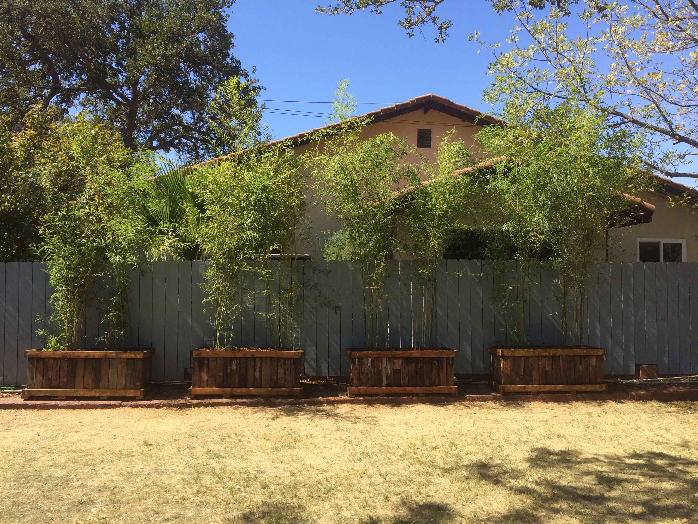
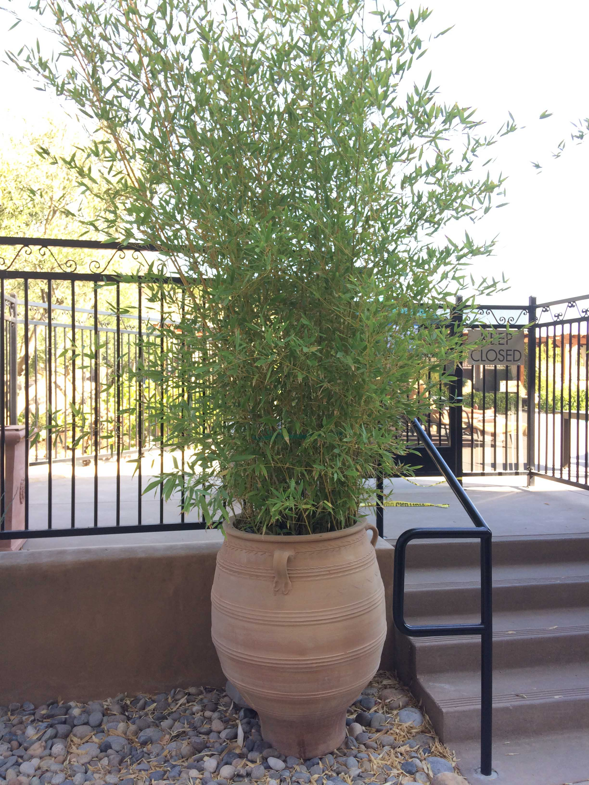
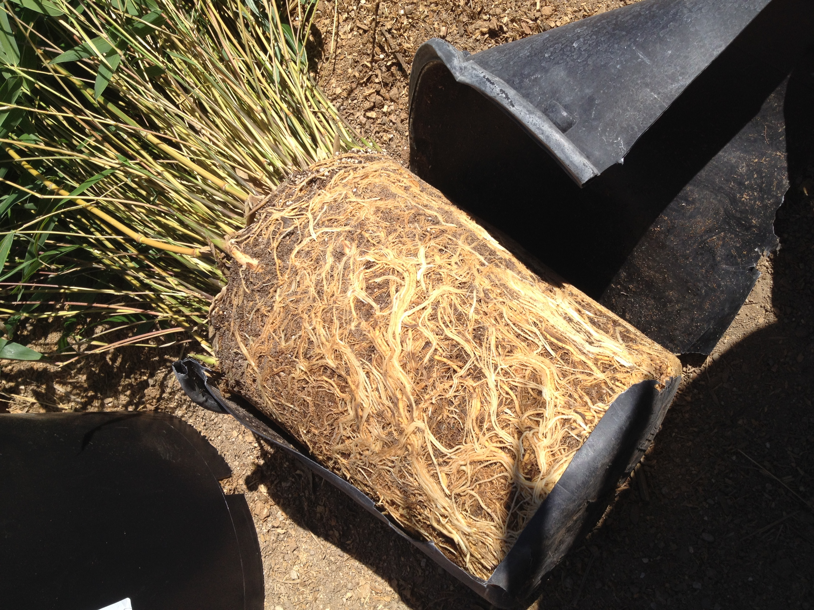
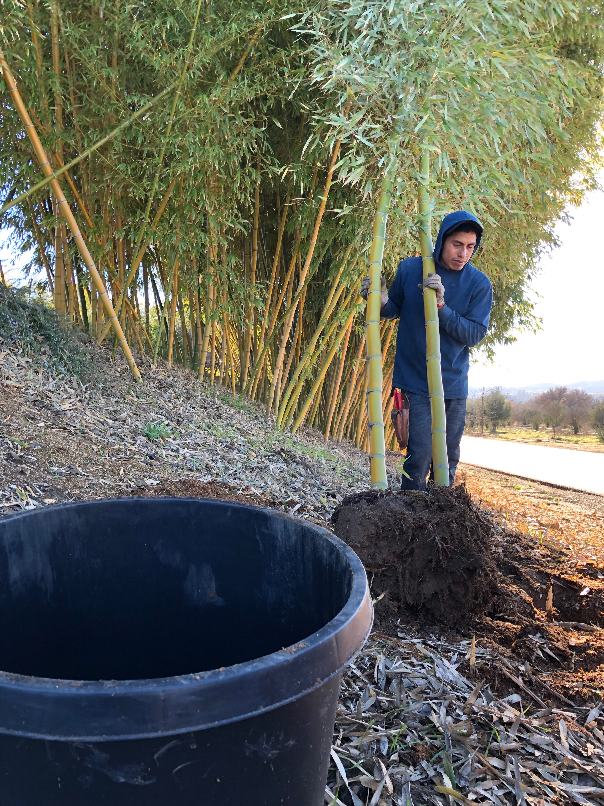

| Maintenance Table | ||||
|---|---|---|---|---|
| Watering | Bamboo in Containers | Mulch | Planting | Staking/Securing Tall Plants |
| Fertilizing | Prunning & Thinning | Leaf Drop | Pest | Terms & Conditions of Potted Bamboo |
Planting and Bamboo Maintenance
Watering
Water your bamboo plant as soon as you get them home.
Newly planted bamboo will need more frequent watering to establish the root mass and propel the growth forward. If your native soil has a lot of clay, it is important not to over water. Bamboo (running variety) has shallow roots, about 15-18 inches down into the ground and then they spread across horizontally. With the roots being shallow, you don’t have to water for a prolonged period of time to replenish them. Generally a plant of 5-gallons in size will need about half a gallon of water and a 15-gallon size plant will need a gallon per watering session. Once the bamboo planting gains establishment after a year or two, it will be able to go more days without watering. The watering schedule goal is to maintain the soil moist, but not saturated. Don’t let it dry out completely for the 1st year. We encourage the use of 3-5 inches of mulch over the bamboo planting. This keeps weeds out, prolongs the time to the next watering, and adds nutrients as the mulch decomposes.
After repotting or planting bamboo into ground, saturate with water to remove air voids and settle root ball. To determine the watering schedule, examine your bamboo daily and watch for leaf curl. When a bamboo plant curls its leaves lengthwise, they are lacking water, thus if it took 4 days for the leaves to curl, water every 3 days, since you don’t want to stress the new planting. After watering, the leaves will uncurl within a couple of hours. This is the best way to calibrate your watering schedule and you should adjust in fall and spring. We highly recommend to water with an irrigation controller and not by hand, unless you’re a certified green thumb person.
If you don’t water after leaf curl, the bamboo leaves will begin to yellow and you are now really affecting your bamboo and its recovery by re-leafing will take months. Continuing without water, the canes will begin to yellow and die.
Bamboo in Containers
Bamboo can grow well in a container but its height will be limited by how much space their roots have.
You can keep any variety of bamboo shorter by constraining its growth area, such as in a pot, or a reduced planting space with root barrier. Ensure the container has good drainage. Sitting in water can rot the roots and kill the plant. When you water, do so slowly until the water is running out of the bottom of the container. Eventually the bamboo plant will out grow its container. One could maintain the bamboo in the same container as long as the older canes are continuously taken out to make room for fresher, newer canes in the spring. We have some bamboo in the same pots for over 10 years. So you can certainly enjoy bamboo in a pot for a very long time. Choosing the correct pot for bamboo is important, we custom build wood planters which are designed specifically for bamboo. Customers have also used horse watering trough metal containers successfully. For smaller plants, a plastic container will work for some time, but the bamboo roots will eventually split it. You can transplant the bamboo into a bigger container size or divide the bamboo root mass in two or three sections and have additional plants to enjoy; this should be done in fall/winter. We recommend a sharp machete for divisions as they deal less root damage. A sawzall works well for bigger rooted bamboo plants. Keep note that when dividing a root mass you are reducing the growth speed as it no longer has the same level of energy to grow like it did prior to being cut.
A great way to enjoy the bamboo and hide your neighbor
 An elegent accent to an entrance
Mulch
Bamboo greatly enjoys the decay of wooden mulch as it creates a more acidic level in the soil.
We add a layer of about 3 inches of pine shavings mixed with aged horse manure throughout our bamboo groves yearly. Wooden mulch provides nutrients, reduces or eliminates weeds, helps retain moisture from evaporation during warmer months, and assists in insulating the root mass during colder months. We highly recommend mulching your newly planted bamboo.
Bamboo is an evergreen, thus it re-leafs through out the year, but during the spring it undergoes a more pronounced re-leafing. The fallen bamboo leaves also provide a layer of mulch and nutrients, such as silica, back into the soil for the bamboo to use. As a natural cycle, bamboo provides its own yearly re-mulching with this leaf litter. We recommend that you leave 3 - 5 inches on your bamboo. However be cautious to not over mulch to the point where irrigation does not penetrate down to the root mass. You can place the irrigation below the mulch to prevent this but keep in mind to check the water emitters from time to time since one can not easily see if they are working or plugged up with minerals or debris.

Planting
Our bamboo plants are well established in their pots upon sale and therefore can be planted year round.
Dig a hole twice as wide, but not much deeper than the depth of the container the bamboo is in. If the ground is dry, fill the hole about half full of water before planting. When you remove the plant from the container, do not divide the root ball or break apart the roots. Doing so risks the possibility of killing the plant or reducing its speed of growth. Place the bamboo in the hole and back fill around the plant with a mixture of 50% native soil and 50% compost or mulch. Bamboo is very tolerant in different soil types but we have found for optimum growth to mix in your local soil with compost/mulch for best results. Bamboo roots require air to absorb and push water through out the plant. Thus, heavier soil such as clay requires further amending than lighter soils. Plant the bamboo at the same level in the soil as it was in the container. Do not plant too low so that you are covering the canes with soil and do not plant too high so that the root ball is exposed.
 Our plants are held for 6 + months after they're harvested and then sold with well established root development
 Maurilio bringing out a 15 gallon timber bamboo
Staking/Securing Tall Plants
Bamboo holds very stable in windy conditions and is even purposed for erosion control.
Bamboo may have shallow roots of about 18 inches in depth but the roots continuously interweave horizontally firmly anchoring itself into the ground. An established bamboo plant will rarely be knocked over by wind unless a happy gopher eats a portion of its support roots. On the contrary, a newly planted 15 gallon bamboo will have a root ball diameter of two feet and a height towering over 12 feet. The height of the bamboo canes and the leaves act as a sail and the wind loads can topple the bamboo over. The bamboo won’t be hurt much from a fall like this but preventative measures should be taken to ensure the establishment of the new planting. Smaller plants, like our 5-gallon bamboo, don’t suffer from such an issue due to their shorter heights. The proper term used to support the taller bamboo is “guyed.” If the bamboo is planted along a fence line, you can utilize the 4x4 posts in between panels to anchor and restrain the plant with strong rope to run across the privacy screen. Ideally, you want to tie the bamboo no lower than half of its height, two-thirds from the ground up is preferred. Stakes on each end of the bamboo screen can be installed and a few in between the planting area, adding as needed depending on the length of the screen. Strong rope is to be tied at one end and intertwined through the screen, harnessing canes from each plant along the way and securely tied at each stake encountered. Not all installations will require securing as heavier soil types tend to anchor the bamboo well.
 Our Madake Timber Avenue
Our Madake Timber AvenueFertilizing
We highly recommend the traditional fertilizer used on bamboo in Asia, aged horse manure.
Other aged manures can be used instead, but avoid from chickens as they tend to be harsh on the bamboo. If you are using manure, we recommend you leave it out in the sun for a few days, rather than directly placing it on the plant. Fresh manure can have the tendency to be harsh on your plants. Spreading about a 3 inch layer of manure in late fall will allow time for nitrogen conversation before the growing season and will supply the nutrients necessary for healthy growth.
You can also use commercial fertilizers that can be applied on your lawn as bamboo falls under the grass family. We use a high nitrogen, 4-month slow release grass fertilizer, 25-5-5. You can purchase 5 pound bags from us. Beautiful growth will cultivate every spring with regular feeding of nutrients to your bamboo.
Prunning & Thinning
Bamboo will grow new canes each spring, given water and space. Generally, canes will live for 5-10 years.
Depending on the bamboo variety and environmental conditions, each bamboo plant can sprout about 2 - 10 new shoots during the spring. As canes age, they put out less leaves and can generally yellow in color, until they eventually gray and die. Dead and older looking canes should be removed by cutting them off at ground level. It is ideal to remove older and dead canes to make room for fresh, new ones. This keeps your screen or grove looking pristine. Bamboo only grows within the first 2 months of sprouting from the ground and after that time period, they will no longer gain height or width. You can top the bamboo to your desired height and it will not grow back. This is a maintenance that will only need to be done once a year in the springtime when the new canes come in. It is best to cut a bamboo right above a node on a cane. The nodes are the solid points or the ends of where the cane is hollow, which are indicated by the circular rims along the cane where the branches sprout. If the bamboo is cut further up from the node, then a cup is created for water to sit in and cause rot at that location. You may top off bamboo canes to a desired height if they are getting too tall. You can cater the look of your bamboo by cutting a portion of the lower end branches to allow viewing of the canes rather than have a dense hedge from the ground up. Once the branches are cut off they will not grow back on that node.
Leaf Drop
Leaf drop is a normal process thoughout the year, with a higher leaf drop in spring.
The leaves create a layer of mulch on the soil surface that helps retain moisture and returns nutrients to the soil such as silica, making them available to the plant to enjoy. Nature’s recycling plan! It’s fine if you prefer a cleaner look and remove all the leaves from under the plants, but you then should fertilize to make up for the removed nutrients. Tip-burn, or leaf drying at the tips, is sometimes observed, and it is probably caused by environmental stresses or excess salts in the water. It is not a health issue. We also learnerd while bamboo is shooting in the spring, the leaves will also show signs of tip-burn.
Bamboo re-leaves throughout the year, most notably in the spring. Bamboo will shed its older leaves in phases so you never see your bamboo bare. Fresh new leaves will quickly replace them and continue looking vibrant.
 New sprouting leaflets ready to begin a new cycle
New sprouting leaflets ready to begin a new cyclePest
Unfortunately gophers love to feast on bamboo roots.
If you have gophers, we recommend protecting young plants using gopher cages or your preferred method of controlling them. Chicken fencing works well and is easy to cut and bend to wrap around the bamboo root ball. The bamboo roots will be able to grow through the chicken wire gaps and the heart of the root ball will be untouchable by the gophers. In the spring, aphids can be an issue for your bamboo. We recommend you check the underside of the bamboo leaves early spring as aphids enjoy the fresh new leaves, taking shelter and breeding underneath the protection of the foliage. Aphids secrete a sweet substance that invites a black sooty mold to the leaf surface that is very difficult to wash off. To simply get rid of the aphids, attach a spray gun to your hose, or place your thumb over the spout and shoot the water under the bamboo leaves. Aphids are soft bodied and the water pressure is enough to knock them off and kill them. For bigger applications, such as our bamboo groves, we recruit the help of ladybugs and they take care of the aphids for us.
 Black Sooty Mold development on the leaves
Black Sooty Mold development on the leaves Ladybugs to the Rescue!
Ladybugs to the Rescue!